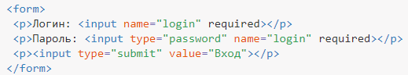
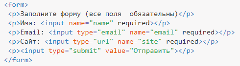
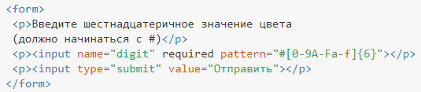
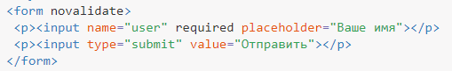
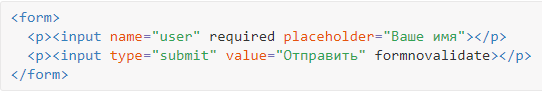

Защита от дурака
«Защитой от дурака» называется комплекс мер по пресечению ввода неправильной информации в форме. Например, если в поле требуется ввести положительное число от 0 до 10, то следует проверить, чтобы пользователь не ввёл текст или число, которое не лежит в указанном диапазоне, т. е. число не должно быть меньше нуля и больше десяти.
Почему происходит ввод неправильной информации? Это в основном совершается по трём причинам.
- Пользователь ошибся случайно, например, невнимательно прочитал, что ему требуется указать.
- На веб-странице неоднозначно просят ввести данные, поэтому пользователю приходится гадать и делать предположение, что же в действительности от него хотят. При этом не всегда происходит совпадение мнений разработчика и пользователя.
- Есть ряд людей, которые воспринимают инструкции, как вызов и стараются поступить наоборот. Такие пользователи рассуждают примерно так: «Ага, меня просят ввести число. А что будет, если я укажу буквы?». После чего задают явно неправильную информацию и смотрят, к чему это приведёт.
Следует понимать, что точные и правильные формулировки хотя и снижают вероятность возникновения ошибок, но никак не спасают от них. Только технические средства на стороне сервера позволяют получить требуемый результат и избежать ввода неправильной информации.
Тем не менее, валидация на стороне клиента позволяет быстро проверить данные, вводимые пользователем, на корректность без отправки формы на сервер. Таким образом экономится время пользователя и снижается нагрузка на сервер. С позиции юзабилити тоже имеются плюсы — пользователь сразу получает сообщение о том, какую информацию он указал неверно и может исправить свою ошибку.
Обязательное поле
Некоторые поля формы должны быть обязательно заполнены перед их отправкой на сервер. Это, к примеру, относится к форме регистрации, где требуется ввести логин и пароль. Для указания обязательных полей используется атрибут required, как показано в примере 1.
Обязательные поля должны быть заполнены перед отправкой формы, иначе форма на сервер не пересылается и браузер выдаст об этом предупреждение.
Пример 1. Атрибут required

Корректность данных
Исходно имеется два поля в котором вводимые пользователем данные проверяются автоматически. Это веб-адрес и адрес электронной почты. Для этих элементов характерны следующие правила.
- Веб-адрес (<input type="url">) должен содержать протокол (http://, https://, ftp://).
- Адрес электронной почты (<input type="email">) должен содержать буквы или цифры до символа @, после него, затем точку и домен первого уровня.
У браузеров несколько различается политика по проверке данных пользователя. Chrome и Opera требуют, чтобы в почтовом адресе была точка, для Firefox она не обязательна.
В примере 2 показана форма с обязательными полями, в которой два поля проверяется браузером.
Пример 2. Корректность данных

Шаблон ввода
Некоторые данные нельзя отнести к одному из видов элементов формы, поэтому для них приходится использовать текстовое поле. При этом их ввод происходит по определённому стандарту. Так, IP-адрес содержит четыре числа разделённых точкой (192.168.0.1), почтовый индекс России ограничен шестью цифрами (124007), телефон содержит код города и конкретное количество цифр часто разделяемых дефисом (391 555-341-42) и др.
Браузеру необходимо указать шаблон ввода, чтобы он согласно нему проверял вводимые пользователем данные. Для этого используется атрибут pattern, а его значением выступает регулярное выражение. Некоторые типовые значения перечислены в табл. 1.
| Выражение | Описание |
|---|---|
| \d [0-9] | Одна цифра от 0 до 9. |
| \D [^0-9] | Любой символ кроме цифры. |
| \s | Пробел. |
| [A-Z] | Только заглавная латинская буква. |
| [A-Za-z] | Только латинская буква в любом регистре. |
| [А-Яа-яЁё] | Только русская буква в любом регистре. |
| [A-Za-zА-Яа-яЁё] | Любая буква русского и латинского алфавита. |
| [0-9]{3} | Три цифры. |
| [A-Za-z]{6,} | Не менее шести латинских букв. |
| [0-9]{,3} | Не более трёх цифр. |
| [0-9]{5,10} | От пяти до десяти цифр. |
| ^[a-zA-Z]+$ | Любое слово на латинице. |
| ^[А-Яа-яЁё\s]+$ | Любое слово на русском включая пробелы. |
| ^[ 0-9]+$ | Любое число. |
В примере 3 просят ввести шестнадцатеричное значение цвета (#ffcc00) и если оно не лежит в этом диапазоне, браузер выводит сообщение об ошибке.
Пример 3. Шаблон ввода

Отмена валидации
Валидация не всегда требуется для формы, разработчик может пожелать использовать универсальное решение на JavaScript и дублирующая проверка браузером ему уже ни к чему.
В подобных случаях необходимо отключить встроенную валидацию. Для этого применяется атрибут novalidate элемента <form>. В примере 4 показано использование этого атрибута.
Пример 4. Отмена валидации

Для аналогичной цели применяется и атрибут formnovalidate, который добавляется к кнопке для отправки формы, в данном случае к <input type="submit">. Тогда форма из примера 4 будет иметь следующий вид.
Пример 5. Отмена валидации formnovalidate
